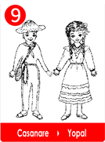
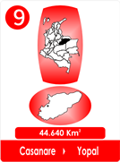
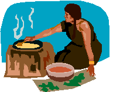

 
Hace mucho tiempo dicen que sucedió en Casanare.
La madre y el padre de "Cita" se habían ido al mercado del pueblo, llevando mantas de colores, ruanas, sacos y frutas, para el trueque de legumbres.
Era en el mercado en donde se hacían los trueques, se cambiaban según las necesidades de las familias, si necesitaban algodón , alimentos , verduras o animales.
Pero Cita era apenas una nenita, no entendía y lloraba y no paraba.
La abuela la mecía en la hamaca de cabuya, pero la pequeña, añoraba el calor y el arrullo de su mamita.
Entonces la abuela decidió calmarle el llanto y las lágrimas de la nenita.
Como todas las abuelas tenia mucha experiencia, y sabía lo que le gustaría a su nietecita.
Entonces le hizo una muñeca de estropajo, la envolvió en el capacho de la mazorca y le hizo unas largas trenzas de puro fique
Le colocó un lacito de pita bien entintado de rojo y le agregó un collar de chochos anaranjados, de la buena suerte. Al ver la muñeca, "Cita "secó sus lágrimas y se le dibujó una sonrisa, en su carita redonda.

La abuelita viéndola dormir, pudo preparar los alimentos para cuando llegaran los padres amorosos y cansados de Cita.
Al poco rato, al vaivén de la hamaca de cabuya y al compás de los sonajeros de semilla. Cita sintió en sus sueños el abrazo de su dulce madrecita y el cariño de la amorosa abuelita.
? Fue la muñeca la que secó las lágrimas de la nenita?